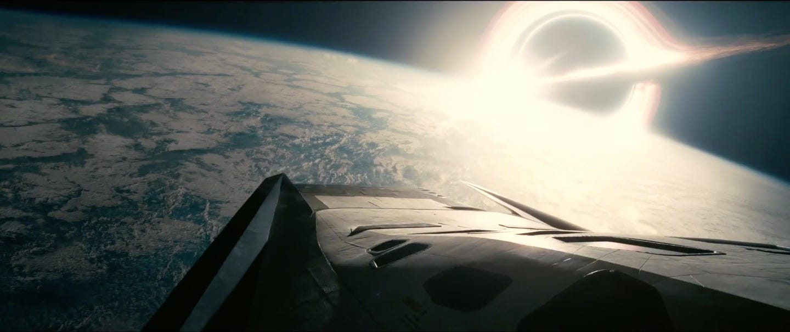

About the Movie
Interstellar is a 2014 epic science fiction drama film directed by Christopher Nolan, who co-wrote the screenplay with his brother Jonathan Nolan. It stars Matthew McConaughey, Anne Hathaway, Jessica Chastain, Bill Irwin, Ellen Burstyn, and Michael Caine. Set in a dystopian future where Earth is suffering from catastrophic blight and famine, the film follows a group of astronauts who travel through a wormhole near Saturn in search of a new home for mankind.


